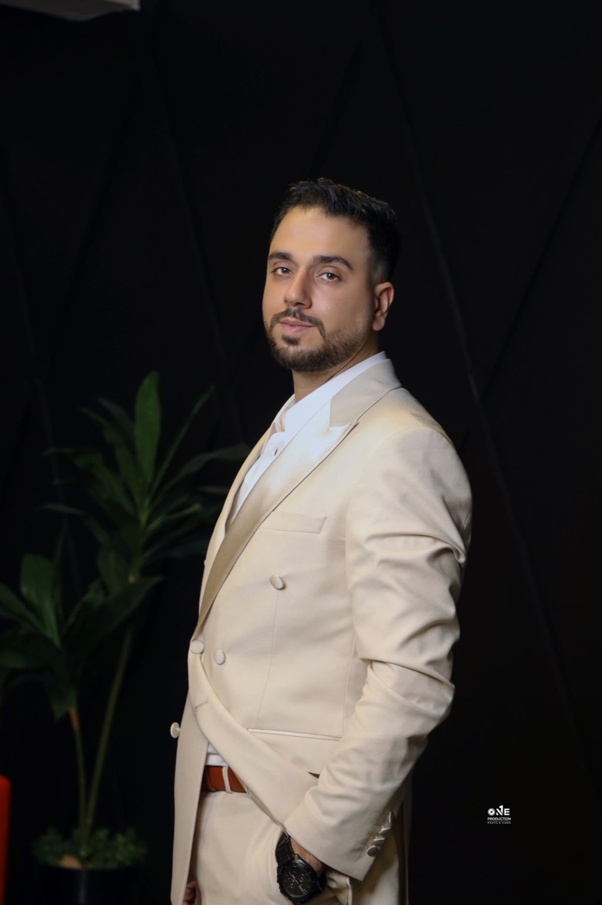
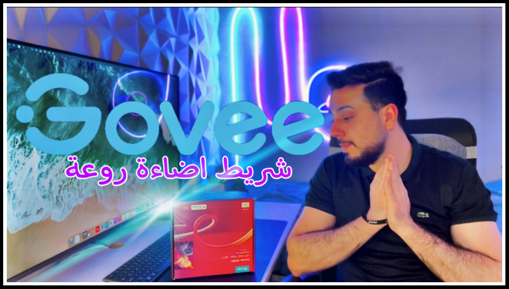
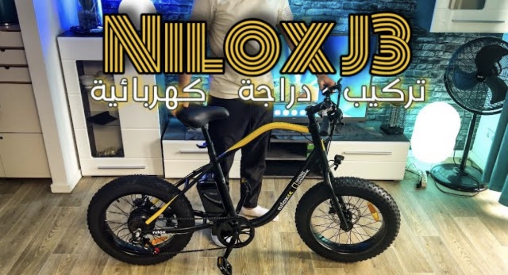
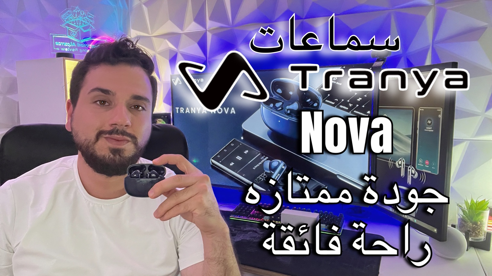
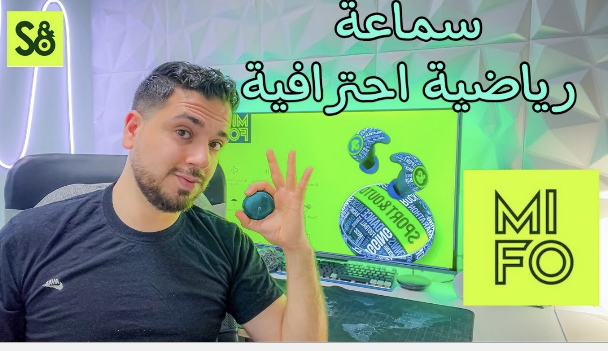
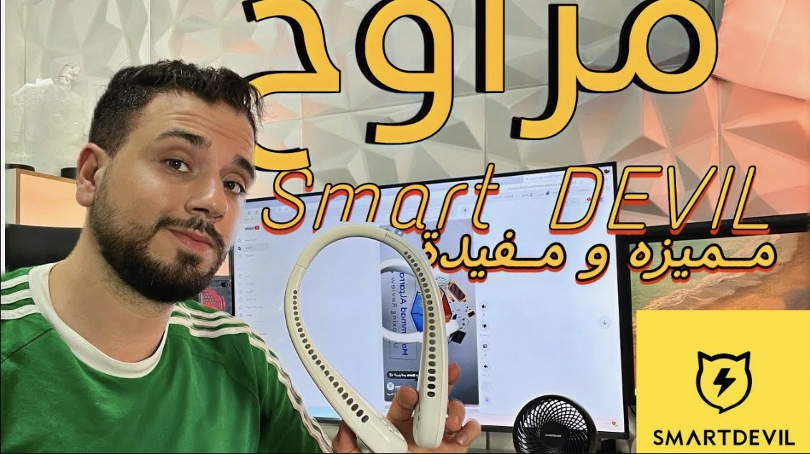
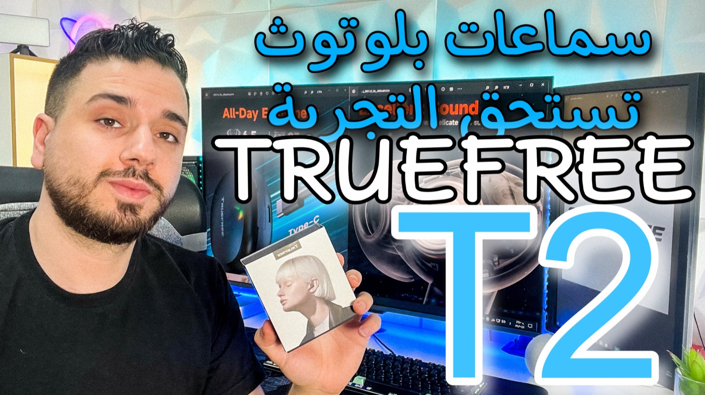

159+
فيديو منشور

أفتح الصندوق، أختبر الجهاز كما يُستخدم يوميًا، وأعطيك الخلاصة بلا ضجيج تسويقي. هدف القناة بسيط: تختار بثقة وتوفّر وقتك ومالك.






فيديو منشور
سنوات خبرة
لغات نستخدمها
مشاريع وتعاونات
كل منتج له قصة… وكل فيديو هو لحظة اكتشاف جديدة.
أفتح الصندوق، أجرّب الأجهزة، أقارن، أشرح، وأعطيك رأيي الحقيقي بدون مبالغة ولا تضخيم.
إذا كنت تبحث عن تجارب عملية ومراجعات صريحة تساعدك في اختيار جهازك القادم… فأنت في المكان المناسب.
فتح صناديق • تجارب عملية • مراجعات تقنية
تعليقات واقعية الطابع عن قيمة القناة، توضح كيف يساعد المحتوى في القرارات والعمل.
"أول قناة لوجستيات تشرح ببساطة وبدون مبالغة. نصائح النقل ساعدتني أطور مساري المهني."
"The blend of logistics stories and tech reviews feels authentic. I pick tools faster now."
"شرح عملي للأجهزة والخدمات، مع تركيز على التجربة الفعلية وليس المواصفات فقط."
"Concise videos, classy design, and clear takeaways. Subscribed and recommended."
Subscribe · شارك
اشترك لتصلك فيديوهات اللوجستيات والتقنية، أو راسلني لتعاون أو استشارة.